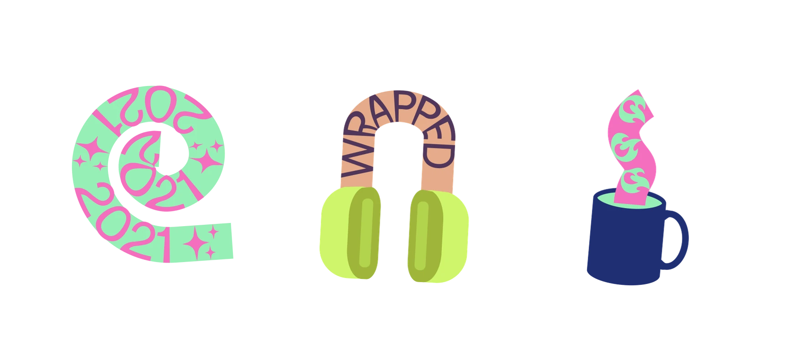

Spotify Wrapped
How can we give users the tools to tell their own story inside Spotify’s brand?
Motion Designer (2021)
2021 Wrapped celebrated the millions of weird and wonderful ways people listen, built on the idea that no two listening years look the same. Working inside a larger team, I was the motion designer for the Wrapped social posts and designed the Instagram Story sticker set.
The sticker set
The stickers had to feel personal and native to Stories: tools for listeners to bring their own Wrapped data into a post without it reading as branded content.

The social posts
The posts shipped across Instagram, Twitter and Facebook.
120 million listeners engaged with Wrapped 2021, up 29% on the year before, and people shared Wrapped stories and cards nearly 60 million times.
Source: Spotify, fourth quarter 2021 results